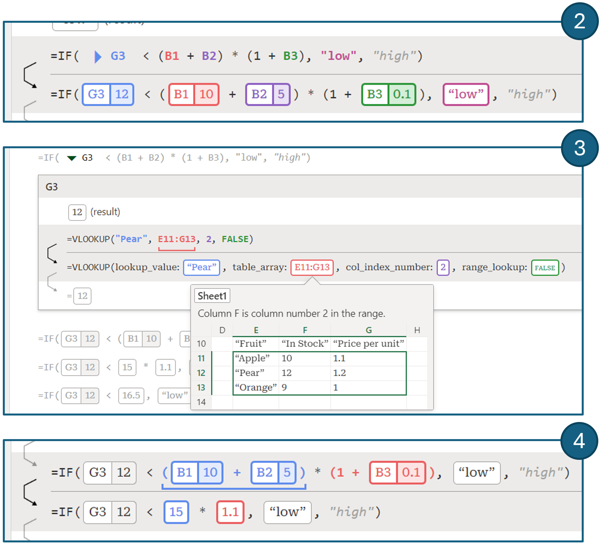
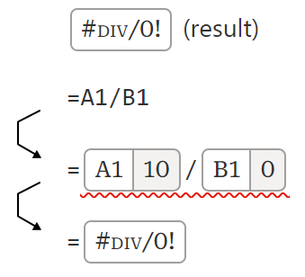
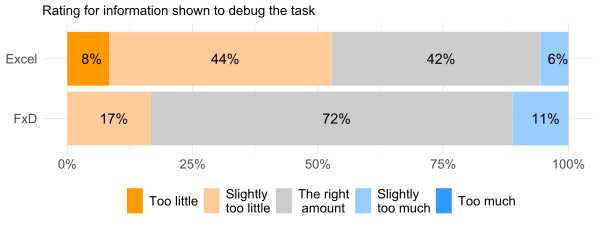
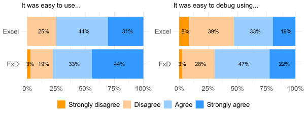
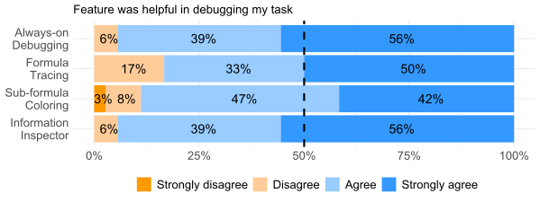
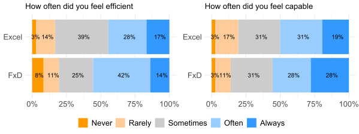

Recent enhancements to the spreadsheet formula language and intelligent spreadsheet interfaces allow spreadsheet users to build more complex spreadsheets in systematic ways (e.g., via functional abstractions). However, users have been slow to adopt such features, partly due to the absence of corresponding improvements in tools such as editors and debuggers. We present FxD, a novel spreadsheet debugging interface, which provides structured information needed for spreadsheet users to debug formulas in systematic ways through affordances such as the ability to step into the execution of dependencies and provide contextual information to users based on the current context. An in-vitro, within-subject (n=12) experiment revealed that, even though using FxD did not lead to faster debugging, participants reported qualitative improvements (e.g., feelings of efficiency and capability) when debugging with it. Further, participants were more satisfied with the amount of information provided by FxD and felt that it would enhance their existing debugging workflows. Our results have implications for the design of debuggers for spreadsheets and for functional programming languages in general.
FxD was published at VL/HCC 2023 and won a best paper, honorable mention award.
You can find the full paper here. Below you will find a summary of the full research paper.
As with any programming activity, programming in spreadsheets also involves activities such as debugging, testing, maintenance, and design.
This reasoning lies at the root of a large body of work in end-user programming and end-user software engineering; examples include fault isolation, spreadsheet refactoring and spreadsheet comprehension.
Several language extensions have also been introduced over the years to help users manage complexity via abstractions.
For example, arrays and custom data types provide new data structures to store and access information, and sheet-defined functions and LAMBDA allow functional abstractions.
Unfortunately, these language improvements have not been accompanied by improvement in spreadsheet development tools in commercial spreadsheets.
If any, such tool improvements are predominantly focused on authoring spreadsheets (e.g., suggesting formulas) and overlook other equally important activities such as debugging or testing.
Indeed, a recent study of spreadsheet users found users pointing out the need for better spreadsheet development tools, including better syntax highlighting in editors, better debuggers, and even package management systems.
Multiple studies in the past have also indicated these limitations, particularly the challenges of debugging spreadsheets.
Building on these past findings, we set out to build a debugger for spreadsheet formulas. We call it FxD.
The idea of debugging spreadsheets is by no means new, and nor is ours the first spreadsheet debugger; all commercial spreadsheet packages come with some debugger capabilities.
Still, users face various challenges debugging, and the existing tools have remained largely unchanged in decades and user research on spreadsheet debugging is sparse.
Therefore, we asked the question: what would a spreadsheet debugger look like, if we took a principled, user-centric approach to design one?
Contributions of this project:
(1) We implement FxD, which embodies a new interaction style for debugging spreadsheet formulas: it provides live debugging and a feature-rich set of navigation tools for users to inspect formulas by exploring the steps in formula execution,
discerning connections between steps through contextual coloring, and by inspecting data and formula context.
(2) We evaluate FxD through a user study: we found that FxD provides the right amount of information for users to debug spreadsheet issues, made participants feel more efficient and capable,
integrates with the spreadsheet user's debugging workflow, reduced the need for users to turn to web searches when comprehending unfamiliar and complex formulas, and even assisted them in authoring new formulas.
We collected feedback on FxD features to improve them for future debuggers.
We implement FxD with four central features, with each feature being directly addressed in our evaluation. The above figure presents FxD and these features in-use, and we now describe each feature in turn.
Always on debugging: FxD pane presents an editable formula at the top, with the corresponding execution steps displayed below (Figure (1)).
The execution steps are automatically visible to the user, without initialization. Additionally, the execution steps reactively update as the user edits the formula. As a user modifies potentially problematic code
they can immediately inspect the results, aiding fault localization and verification.
Step-wise evaluation: FxD shows the steps in the evaluation of the formula being debugged; this is called tracing in the functional debugging literature.
We considered two design options: 1) show one execution step at a time (similar to step-through debugging), or 2) show all steps at once. The former is less efficient, while the latter can lead to information overload.
We selected the latter to allow the user to quickly navigate to a step they are interested in. To lower the cognitive burden of complex formulas due to this information overload,
FxD does not present every atomic evaluation step. Instead, a single step in FxD can evaluate multiple expressions, either by chaining evaluation of operators of equal precedence, or by evaluating expressions
in parallel subtrees. Further, FxD will collapse the evaluation of precedent formulas, indicated by a triangle, and expanding the triangle will reveal the formula trace as a recursive card (Figure (3)).

Sub-formula trace coloring:
To deal with the information overload that arises from showing all steps in the trace, as well as evaluating multiple expressions in a single step, FxD provides additional affordances for users to inspect the affected
expression at each step of the trace. When hovering over a step, FxD will highlight the evaluated expressions in the step and use the same color to indicate the result; each expression is assigned a different color
(Figure (2) and (4)). This paradigm borrows from reference highlighting, commonly used in spreadsheets. The highlighting introduced through hovering can be "pinned" by selecting the arrow in the left margin.
When there are many simultaneous reductions in a step it can be difficult to relate a particular expression to its value, even with coloring. FxD will underline the original expression when hovering over an intermediate value,
as shown in Figure (4).

Info inspector: FxD allows users to inspect all precedents of the formula or expression they are debugging. Additionally, FxD provides a range of affordances that offer debugging information to the user.
As discussed, precedent formulas can be inspected by expanding the trace card. Furthermore, FxD integrates reference provenance using "pills".
A value that is derived from another cell is annotated with the cell reference, as shown in Figure (2) and the pill for 12, obtained by evaluating G3.
Ranges are an integral part of formulas and FxD implements a range preview, inspired by spreadsheet bubbles. When hovering over a range a preview of the grid and surrounding context is shown to the
user (Figure (3)).
Range previews are aware of the execution context; when the range appears as the table argument to a lookup function, the lookup column is labeled in the preview.
FxD also supports a variety of tooltips that describe functions and their parameters, or allow the inspection of array values which are normally truncated in the trace.
Finally, when a formula evaluates to an error code, FxD indicates the step in which the error first occurs.
Participants: We recruited Excel users (n=12, 4 women, 8 men) via a social media posting on LinkedIn and email to spreadsheet users from past studies. They self-reported usage of at least 1 version of Microsoft Excel. All participants reported a lot of experience with spreadsheets, but with varying levels of usage (4 basic usage, 3 some advanced features, 5 many advanced features). The most commonly reported usage of spreadsheets was tracking (e.g., budgeting) and analyzing data. Finally, participants had varying levels of programming experience (4 having never programmed, 4 ranging between basic through advanced experience, and 4 programming professionally now or in the past).
Tasks: We considered two existing datasets called A and B. For each, we prepared a spreadsheet containing descriptions of three tasks on the data. We seeded each task with a faulty formula. To obtain each faulty formula, we first prepared a formula to complete each task correctly, and then inserted one or more bugs. The type of formulas and bugs selected were sourced from existing posts on the Microsoft Tech Community forum, where the original poster presented a formula causing unexpected results and forum helpers provided verified fixes. We also took spreadsheet challenges posted online by spreadsheet influencers, which raised a problem that many viewers solved with their own formulas which had potential issues. We then adapted the root cause of the bug to our new datasets. The formulas involved advanced functions and typically computed a whole column (that is, the formula applies to each row in a table). We asked participants to localize the faults in each of the faulty formulas in the spreadsheets. If time remained, we asked them to fix the issue by modifying the formula.
Protocol: Participants were assigned A and B datasets through a counterbalanced design, such that half the participants received A then B, and the other half received B then A.
Within these groups, participants were further balanced into two groups that determined if the first set of tasks would be completed with FxD (1 - FxD first) or only using default Excel (2 - Excel first).
In summary, we had four evenly distributed sets of participants: {A first, B first} x {FxD first, Excel first}.
Participants completed three tasks in their first condition. They had 7 minutes per task to read the task, explore the spreadsheet, and debug the formula.
If the participant believed they found the cause of the issue, they explained the cause to the experimenter who confirmed if they were correct.
If they failed to complete the task within the limit, the task was recorded as incorrect. If any time was left, the participant was asked to fix the formula to meet the parameters of the task.
At the end of each task, we asked participants to complete a questionnaire to rate aspects of their experience with FxD or with Excel, based on the condition.
After participants completed three tasks in their first condition, they would switch conditions and complete the remaining three tasks with the other dataset using the same protocol.
Before participants used FxD to complete their set of tasks, they completed a short tutorial introducing them to FxD.
After all tasks were completed, we presented a final questionnaire and interviewed them about their experience debugging the formulas with both FxD and Excel.
Quantitative results
Info amount shown by FxD and Excel:
Participants rated the amount of information shown for each task by FxD with a median of "Just the right amount" (3, sd= 0.53) vs "Slightly too little" (2, sd= 0.73) for Excel.
A Wilcoxon signed-rank test identified a significant difference between these conditions (S=895, p=0.0017).
This might mean that FxD's features provides users with the level of information needed to debug issues in spreadsheets.

Ease of use and finding bugs with FxD and Excel:
Participants in both conditions "Agreed" (median= 3, [FxD avg= 3.19, sd= 0.86], [Excel avg= 3.06, sd= 0.75]) that it was easy to use FxD and Excel during the tasks and "Agreed" (median= 3, [FxD avg= 2.89, sd= 0.78],
[Excel avg= 2.64, sd= 0.90]) that it was easy to find bugs in each condition. A Wilcoxon signed-rank test did not identify a significant difference between conditions for these categories.

FxD's helpfulness for debugging:
In the FxD condition participants were asked to rate each feature's helpfulness for debugging for each task by rating their agreement to the statement "I found this feature helpful during my debugging task".
Participants reported a median of "Strongly agree" (4, sd= 0.61) for Always-on debugging and Information inspector, between "Agree" and "Strongly agree" (3.5, sd= 0.76) for Step-wise evaluation, and "Agree" (3, sd= 0.74) for Sub-formula trace coloring.

Participant affect while debugging:
Participants rated how efficient, capable, frustrated, and confused they felt while using FxD and Excel to debug each task.
Participants rated they felt more often efficient with FxD (median= 4 (Often), sd= 1.13) vs Excel (median= 3 (Sometimes), sd= 1.02) and
more often capable with FxD (median= 4 (Often)) vs Excel (median= 3.5 (between Sometimes and Often)). However, participants rated similar levels of confusion (median= 2 (Rarely))
and frustration (median= 2 (Rarely)) between conditions. A Wilcoxon signed-rank test failed to identify a significant difference between each condition and reported frequency of affect.

Qualitative feedback
Through think-alouds during the tasks and interviews, we collected impressions and feedback on the features of FxD and how FxD fits within debugging workflows.
FxD features feedback: Participants spoke about the usefulness of the features provided by FxD and gave feedback on how to improve the user experience, with P9 saying FxD's
features were "really helpful" and that using FxD was "very intuitive".
(1) Always-on debugging -
Participants noted the usefulness of this feature for authoring formulas. P6 said that if you used FxD to write formulas and inspected the debugging steps shown,
"we probably don't need to debug it, because you would have written it in the correct manner the first time anyway."
Participants offered feedback on how to improve this feature.
Some participants wanted to edit values within the steps instead of on the spreadsheet or in the formula editor above the formula steps (P1, 4).
This could "make life easier, rather than moving between two different interfaces" for users during the debugging process (P4).
(2) Step-wise evaluation -
Our participants saw this feature as helpful to find what went wrong in each formula. P4 said that this feature enables them to
"see what value is coming in through the intermediate steps and why I'm not getting the right output".
P7 thought that having preceding steps to compare with the current step "makes it easy to connect the dots".
P11 stated that these steps help visualize the error for users by marking exactly what step created the error.
However, participants thought that these steps can cause "information overload" (P1) for some formulas using LET, which can leave users feeling "daunted by the debugger" (P7).
One solution that participants imagined was being able to view the data at a higher level of abstraction (P1, 7) by allowing steps to be "collapsible" (P1).
(3) Sub-formula trace coloring -
P8 said that for many of the cases they had seen in the study this feature was "the most helpful". P11 noted during the study that when faced with a more complex formula, this feature gets "very useful" for navigation.
P11 elaborated that these types of visualizations are "helpful for the programmer to keep track, because it's a lot of working memory that you need to hold and this is very cognitively demanding"
and stated that "these kind of small visual cues to keep track is really helpful" for longer formulas. Feedback on this feature related to extending the highlighting beyond the formula steps.
(4) Information inspector -
Participants appreciated the ability to preview ranges with this feature.
P11 said that large spreadsheets can require a lot of scrolling "up and down, left and right", but that FxD can help as
"you can see in-context the other data around that cell. In that sense, you don't need to scroll". Others also described Information inspector as minimizing context switches and
navigations between the spreadsheet and the formula section (P8), or between the spreadsheet and web search (P11).
Participants also gave feedback on how to improve this feature. For the table previews provided, P5 said they wanted the choice to have table headings instead of column letters in the preview to see the column context.
P1 wanted the array preview to be expandable in case they wanted to see it "in more detail".
Debugging workflows:
Participants spoke about their current debugging workflows in Excel and how the debugger might improve them.
P7 starts their debugging workflow by first "eyeballing the formula" at a higher level and seeing if there are obvious issues "like missing dollar signs" (P7).
However, a strategy participants reported and performed during the Excel condition is to break down complex formulas step-by-step manually to try to comprehend what was going wrong with the formula (P5, 8, 10, 12).
P8 would "write formulas all over the place and try to just make sure each step is correct and then put them together.", and that with FxD, "you help me do this process".
Participants then discussed how they would use FxD as part of their spreadsheet debugging workflow, which P3 said was representative of their current workflow -
"this is the first part that I noticed and I'm already thinking awesome, that's what I'm doing in my head anyways" (P3).
All participants were generally positive about adopting FxD into their workflow, with P2 noting that FxD "is a game changer".
Participants thought FxD would be "very integrated" with their workflow (P9) and even replace other features in Excel, with P6 saying they would switch off "the formula bar on the top" in favor of FxD.
Participants stated that FxD was useful for comprehending formulas (P1, 2, 5, 7, 10-12), particularly during collaboration or sharing of spreadsheets.
P7 also expected that FxD could be useful in helping them understand past formulas since they
"probably will have forgotten" what they did after time away from that spreadsheet.
FxD provided affordances that participants said they would use to debug complex formulas and errors that might occur with them (P1, 5, 7, 9-11), which can help end-user programmers
"try to do the task without needing programming, but also try to eliminate the error in complicated syntax" (P11).
P7 noted that FxD allowed them to make sure their newly created formula "does the steps in the right way that I was intending".
End-user debugger needs:
Participant feedback described several important design principles for debuggers aimed at end-users that future debuggers should consider.
Handing complexity - While most participants believed FxD showed useful information, several of our participants warned of information overload that could occur for more complex formulas they saw in the study.
Presenting large formula execution traces on the onset of debugging a formula, or any functional program, might overwhelm a user.
Thus, we believe end-user debuggers must consider the complexity of the formula being debugged and ease users into the debugging process to prevent information overload.
One ability to assist in navigating larger traces is the ability to pin execution steps.
FxD's affordance for pinning steps was seen as helpful to assist in preventing users from "losing their place" when scrolling through longer execution traces
if they found an interesting step but wanted to continue to explore further steps while debugging.
Providing explainability - Our participants also noted a need for explainability within formula debuggers.
While FxD provides general context and a short natural language explanation of functions being debugged in a formula, more can be done to meet this need.
This includes helping users understand what terminology used in parameters might mean. Other participants wanted to be told what types of values were expected in certain functions,
to help them quickly hone in on issues like when a number is expected but a string is given, which can cause errors.
A more connected debugger - Our participants wanted a seamless connection between the debugger and the spreadsheet.
Some participants wanted edits of values within the debugger steps to impact the spreadsheet itself, rather than just fixing the formula in the formula edit portion of FxD.
However, this freedom can impact downstream formulas that depend on the result of the formula being debugged. These downstream effects must be made clear to users so they can be confident that their changes
to one formula do not have unforeseen consequences.
Users need highly integrated debuggers that fit within their spreadsheet workflows and bring them the flexibility to explore and modify the steps of the formula wherever they desire.
AI-generated code needs - Finally, there is a user need to audit formulas written by non-humans, as some participants wanted AI-assistance in finding and fixing bugs they found in their spreadsheets.
However, AI-generated code is not without bugs itself.
Even as AI-generated formulas become commonplace, debuggers can still play a role in the auditing and verifying of generated formulas,
especially as these new AI-affordances allow users to generate complex formulas that are difficult to comprehend without extra information.
Conclusion: Spreadsheet users need to be able to debug formulas to fix issues within spreadsheets they have written or have received from external sources. Existing affordances in Excel do not provide the level of information to do this satisfactorily for these users. Thus, we identified and designed 4 features for formula debugging in spreadsheets and implemented them as FxD, which adheres to design goals that provide live debugging and a feature-rich set of navigation tools to enable formula inspection. We evaluated FxD through an in-lab user study and found it provided a sufficient amount of information for users to debug spreadsheet issues, made participants feel more efficient and capable, and fit with in the spreadsheet user's workflow for debugging formulas. The feedback received from our participants shows a need for spreadsheet debuggers that provide the right amount of information to debug issues and provide adequate amounts of formula explanability, but do so without causing information overload to the user. Our findings are useful for the implementing of end-user spreadsheet debugging interactions and may even inform designs for understanding, auditing, and debugging AI-generated formulas.